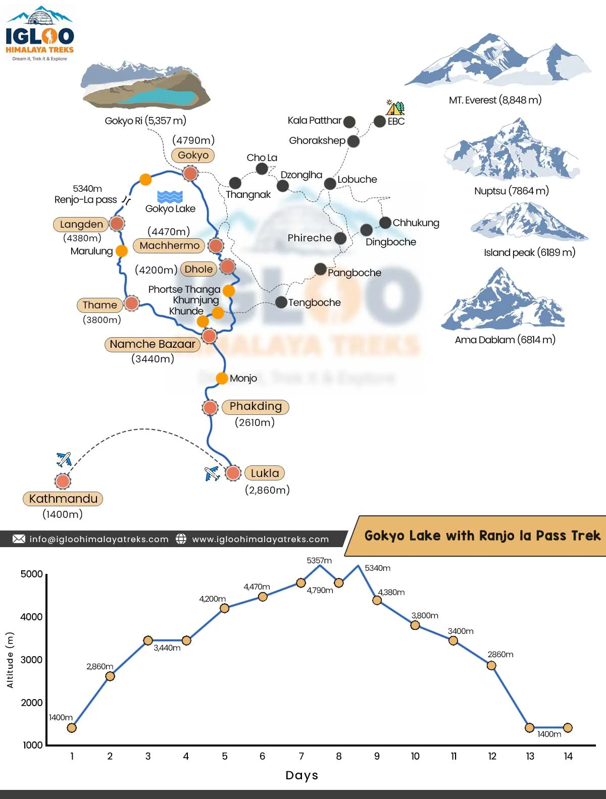
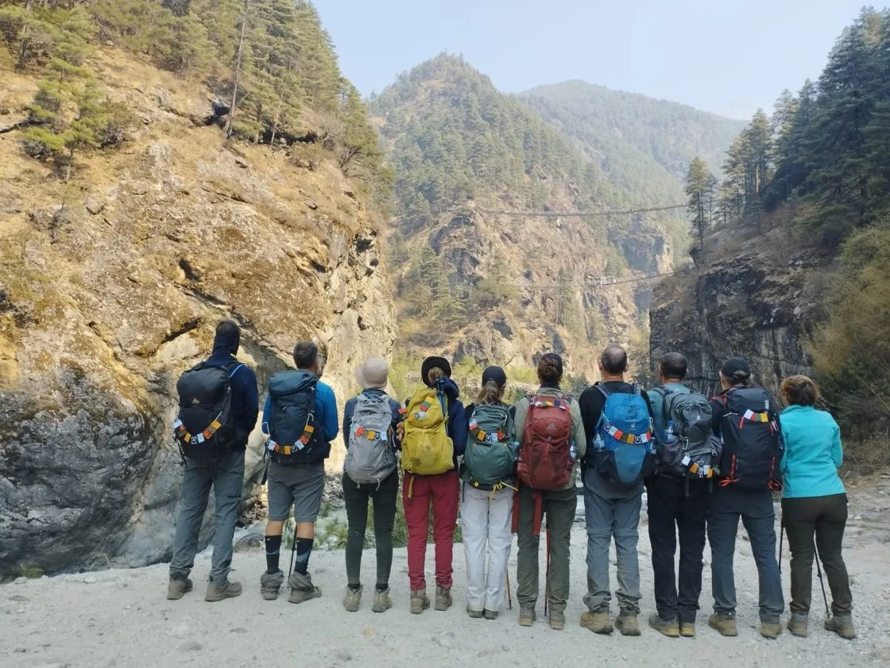
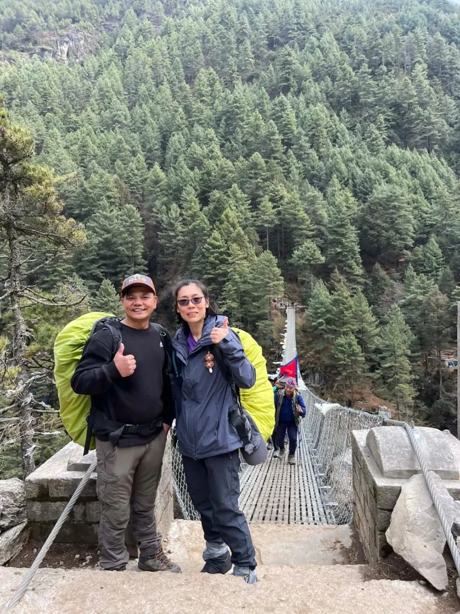
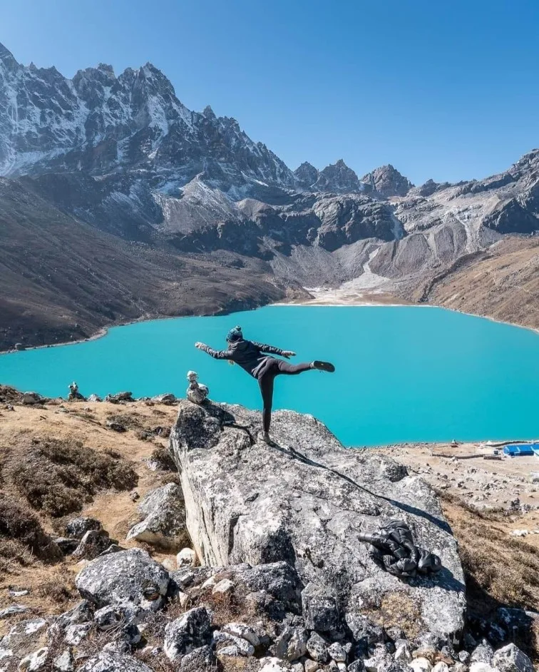
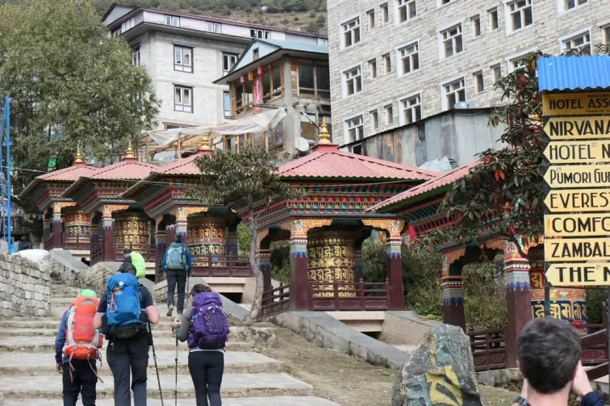
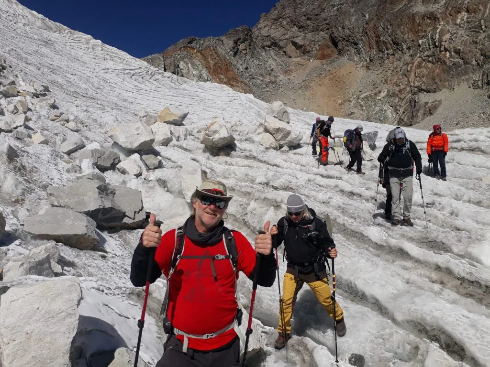
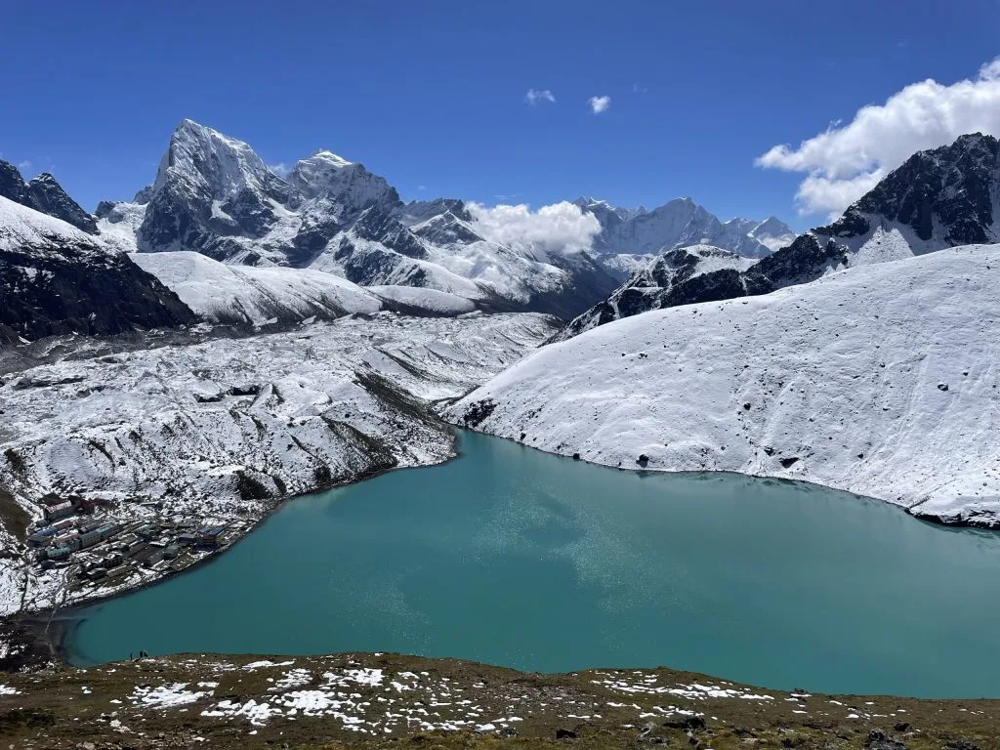
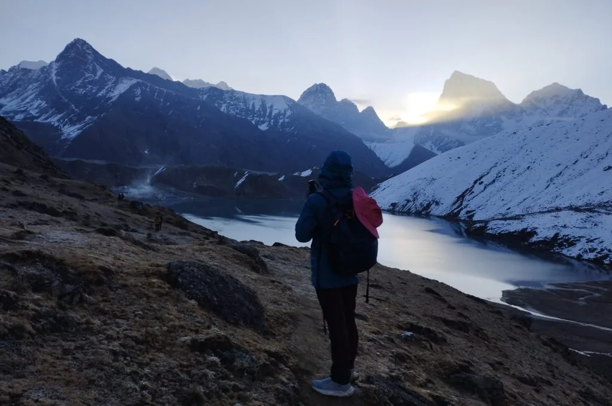
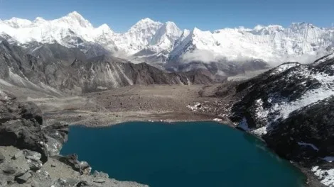

1. Total Trail Mileage & Distance Overview: Out-and-Back vs Circuits
Calculating the true distance of the Gokyo Lakes trek depends entirely on which route variant you choose. The standard route is an out-and-back trek through the Dudh Koshi and Gokyo Valleys, diverging from the main Everest Base Camp trail above Sanasa at Kyangjuma and ascending north through Dole and Machhermo to reach Gokyo village (4,790 m) alongside the Third Lake (Dudh Pokhari).
A standard 11-day out-and-back itinerary measures 92 km (57.1 miles) total, which includes the morning summit ascent of Gokyo Ri (5,357 m / 17,575 ft). However, many trekkers add exploratory side hikes to the Fourth Lake (Thonak Tsho) and Fifth Lake (Ngozumpa Tsho), which adds another 10 to 14 km of wilderness walking along the edge of the Ngozumpa Glacier—the longest glacier in the Himalayas.

For adventurous trekkers seeking loop routes rather than retracing steps down the valley, two world-class variations exist:
- The Renjo La Pass Wilderness Circuit (108 km / 67.1 miles): Instead of walking back through Dole, you cross westward over Renjo La Pass (5,360 m / 17,585 ft) into the remote Bhote Koshi Valley, descending through Lungden and Thame before rejoining Namche Bazaar. This adds approximately 16 km of remote trekking.
- Gokyo Lakes to Everest Base Camp via Cho La Pass (128 km / 79.5 miles): You cross the Ngozumpa Glacier and traverse east over Cho La Pass (5,420 m / 17,782 ft) into Dzongla and Lobuche, continuing to Everest Base Camp and Kala Patthar before descending via Pheriche. This grand traverse totals nearly 80 miles.
2. Day-by-Day GPS Distance, Kilometers, Miles & Hiking Times
Below is the precise, GPS-tracked distance breakdown for the classic 11-day Gokyo Lakes out-and-back route from Lukla. Each day’s distance is paired with practical hiking durations that account for altitude pacing, acclimatization stops, and photography breaks.
| Day | Trail Segment | Distance (km) | Distance (mi) | Avg. Duration | Altitude Change |
|---|---|---|---|---|---|
| Day 01 | Lukla (2,846 m) to Phakding (2,610 m) | 7.8 km | 4.8 mi | 3.5 – 4.0 hrs | -236 m (descent) |
| Day 02 | Phakding (2,610 m) to Namche Bazaar (3,440 m) | 10.4 km | 6.5 mi | 5.5 – 6.5 hrs | +830 m |
| Day 03 | Namche Acclimatization Hike (Hotel Everest View loop) | 5.2 km | 3.2 mi | 3.5 – 4.0 hrs | +440 m / -440 m |
| Day 04 | Namche Bazaar (3,440 m) to Dole (4,038 m) via Mong La | 11.8 km | 7.3 mi | 5.5 – 6.5 hrs | +598 m (net, +920 m gross) |
| Day 05 | Dole (4,038 m) to Machhermo (4,470 m) | 5.7 km | 3.5 mi | 3.5 – 4.5 hrs | +432 m |
| Day 06 | Machhermo (4,470 m) to Gokyo Third Lake (4,790 m) | 6.8 km | 4.2 mi | 4.0 – 5.0 hrs | +320 m |
| Day 07 | Gokyo Ri Summit (5,357 m) & 4th Lake Excursion | 7.4 km | 4.6 mi | 5.5 – 6.5 hrs | +567 m / -567 m |
| Day 08 | Gokyo (4,790 m) to Dole (4,038 m) | 12.5 km | 7.8 mi | 5.0 – 6.0 hrs | -752 m |
| Day 09 | Dole (4,038 m) to Namche Bazaar (3,440 m) | 11.8 km | 7.3 mi | 4.5 – 5.5 hrs | -598 m (net) |
| Day 10 | Namche Bazaar (3,440 m) to Phakding (2,610 m) | 10.4 km | 6.5 mi | 4.5 – 5.0 hrs | -830 m |
| Day 11 | Phakding (2,610 m) to Lukla (2,846 m) | 7.8 km | 4.8 mi | 3.5 – 4.0 hrs | +236 m (uphill finish) |
| Total Standard Trek Distance: | 97.6 km | 60.6 mi | 48 – 57 hrs | Cumulative +4,200 m | |
Never measure mountain days by horizontal kilometers. At 4,500 meters, a 6-kilometer segment with a 400-meter climb takes longer and requires significantly more energy than an 18-kilometer flat hike at sea level. Pace your steps to your breathing rate—roughly one step per breath cycle—and maintain an even tempo.
3. Cumulative Elevation Gain, Loss & Trail Gradients
When analyzing distance in the Khumbu, vertical relief is the decisive factor that dictates exhaustion. Although Lukla is at 2,846 m and Gokyo Ri is at 5,357 m (a nominal difference of 2,511 vertical meters), the actual trail is characterized by constant undulating ridges, river crossings, and deep lateral ravines.
Across the entire round-trip, you will accumulate over 4,200 meters (13,780 feet) of gross vertical ascent and an equal amount of knee-pounding descent. The trail gradients vary dramatically across distinct geographical zones:

- The Namche Hill: An unrelenting 800-vertical-meter stair-climb over just 3.2 horizontal kilometers between the Hillary Suspension Bridge and Namche checkpoint, averaging a 25% incline gradient.
- Mong La Pass Ridge: Climbing from Sanasa (3,600 m) to Mong La (3,975 m) involves a 12% to 18% gradient, followed immediately by a sharp 300-meter plunge straight down to Phortse Tenga (3,680 m) at the Dudh Koshi riverbank.
- The Dole Wall: A grueling, stepped climb through rhododendron and bamboo forests from Phortse Tenga up to Dole, gaining 358 vertical meters in just under 2.5 km (15% average incline).
- Gokyo Ri Summit Push: The steepest sustained incline on the trek—567 vertical meters gained over only 1.8 horizontal kilometers, presenting a punishing 31.5% average gradient on loose gravel and scree.
4. Stage 1 Distance Analysis: Lukla to Phakding to Namche Bazaar (18.2 km)
The first stage of the journey is shared with the standard Everest Base Camp route, covering 18.2 kilometers (11.3 miles) from the Tenzing-Hillary Airport in Lukla to the bustling Sherpa amphitheater of Namche Bazaar.
Lukla to Phakding (7.8 km / 4.8 miles): Day one is intentionally kept short and relatively easy to allow your body to adjust to arriving by plane at 2,846 meters. The trail heads gently downhill alongside the roaring Dudh Koshi river, passing Chaurikharka, Ghat, and several painted mani stone walls before reaching Phakding at 2,610 meters. The walking surface consists primarily of wide cobblestone paths through pastoral Sherpa farming settlements.

Phakding to Namche Bazaar (10.4 km / 6.5 miles): This is one of the most physically demanding distance stages of the trek due to the vertical climb at the end. The first 7 kilometers undulate alongside the river, crossing five dramatic suspension bridges back and forth through Monjo (2,835 m) and Jorsalle (2,740 m), where you enter Sagarmatha National Park.
After crossing the towering Hillary Suspension Bridge, you face the famous "Namche Hill"—a continuous 3-hour switchback climb through pine forests that gains 600 vertical meters without a single flat stretch. Keeping a slow, rhythmic cadence is vital to avoiding early-stage acute mountain sickness (AMS).
5. Stage 2 Distance Analysis: Namche through Mong La to Dole & Machhermo (17.5 km)
Above Namche, the trail diverges from the crowded EBC highway at Sanasa, turning sharply north into the tranquil Gokyo Valley. This 17.5-kilometer stage carries you out of the pine tree zone and into barren alpine tundra.
Namche to Dole (11.8 km / 7.3 miles): The day begins with a panoramic high-balcony traverse around the mountainside toward Kyangjuma and Sanasa. At the trail junction, the path climbs steeply over stone steps up to Mong La pass (3,975 m), where an ancient chorten offers breathtaking views of Ama Dablam, Thamserku, and Kantega.
From Mong La, the trail drops sharply by 300 meters down through rhododendron groves to the river crossing at Phortse Tenga (3,680 m) for lunch. From the bridge, you immediately regain all lost altitude and more, climbing an exhausting 2.5-hour trail up through mossy birch forests to the cliffside settlement of Dole (4,038 m).

Dole to Machhermo (5.7 km / 3.5 miles): Although the horizontal mileage is short, this day crosses the critical 4,000-meter physiological threshold. The trail climbs steadily along the open, exposed canyon wall, passing through Lhabarma (4,220 m) and Luza (4,360 m). Trekkers are rewarded with staggering direct vistas of Cho Oyu (8,188 m) and Gyachung Kang (7,952 m) anchoring the northern horizon. You arrive in Machhermo (4,470 m) by lunchtime, leaving the afternoon open for acclimatization hill walks.
6. Stage 3 Distance Analysis: Machhermo to Gokyo 3rd Lake & 4th/5th Lakes (6.8 km + 10 km)
The journey from Machhermo to Gokyo village is widely considered one of the most visually spectacular half-day hikes on earth. Covering 6.8 kilometers (4.2 miles), the trail leads you directly into the inner sanctuary of the sacred glacial lake basin.
Leaving Machhermo, the trail climbs onto a high ridge offering sweeping perspectives of the Dudh Koshi valley floor below. After descending to Pangka (4,480 m)—where a catastrophic 1995 avalanche once occurred—the trail negotiates a steep, rocky staircase carved alongside the massive terminal moraine of the Ngozumpa Glacier.

Here, the turquoise lakes appear sequentially:
- First Lake (Longponga Tsho, 4,710 m): Reached at kilometer 4.2 from Machhermo. A tranquil emerald pool inhabited by brahminy ducks.
- Second Lake (Taujung Tsho, 4,740 m): Located 1.5 km further along a gentle moraine shelf, glowing intense cerulean against barren moraine scree.
- Third Lake (Dudh Pokhari, 4,790 m): The largest of the main lakes, stretching over 1.2 km in length. Gokyo village sits on its eastern shore beneath the shadow of Gokyo Ri.
For trekkers with an extra day, the northern excursion to the Fourth Lake (Thonak Tsho, 4,870 m - 3 km north) and Fifth Lake (Ngozumpa Tsho, 4,990 m - 6 km north) adds a 12 to 14 km round-trip hike along the edge of the glacier, offering the famous "Scoundrel's Viewpoint" directly facing the southern wall of Cho Oyu and Everest.
7. Gokyo Ri Summit Ridge Distance, Vertical Ascent & Step Counts
Gokyo Ri (5,357 m / 17,575 ft) is the ultimate viewpoint of the trek, regarded by high-altitude mountaineers as offering a superior panoramic perspective to Kala Patthar because it reveals four 8,000-meter giants simultaneously: Mount Everest (8,848.86 m), Lhotse (8,516 m), Makalu (8,485 m), and Cho Oyu (8,188 m).
In terms of distance, the ascent of Gokyo Ri is remarkably compact but physically punishing:
- One-Way Trail Distance: Exactly 1.8 kilometers (1.1 miles) from the teahouse doorstep to the prayer-flag-draped summit cairn.
- Round-Trip Distance: 3.6 kilometers (2.2 miles).
- Vertical Elevation Gain: +567 vertical meters (+1,860 feet).
- Average Incline: 31.5% gradient over zig-zagging scree tracks.
- Average Ascent Duration: 2.5 to 3.5 hours for the climb; 1.0 to 1.5 hours for the descent.
- Step Count: Approximately 4,500 to 5,500 steps uphill, requiring intense cardiovascular output due to 50% less atmospheric oxygen than sea level.
Most groups begin the climb to Gokyo Ri between 4:30 AM and 5:30 AM with headlamps. While dawn views are iconic, temperatures on the summit ridge frequently hover between -10°C and -18°C with biting katabatic winds funneling off Cho Oyu. Carry a down jacket, windproof shell, and insulated mittens in your daypack.
8. High Pass Extension: Gokyo to EBC via Cho La Pass Distance (Additional 38 km)
Trekkers who wish to combine the serene lakes of Gokyo with the historic destination of Everest Base Camp take the legendary Cho La Pass traverse. This route bridges the Gokyo and Khumbu valleys and increases the total trek distance from 92 km to 128 km (79.5 miles).

Here is how the distance breaks down across the Cho La Pass link:
- Gokyo to Thagnak (3.8 km / 2.4 miles): Crossing the massive rubble field and shifting moraine of the Ngozumpa Glacier takes 2.5 to 3.5 hours of careful route-finding across uneven boulder terrain.
- Thagnak to Dzongla via Cho La Pass (7.6 km / 4.7 miles): A demanding 7- to 8-hour alpine day ascending 720 vertical meters over steep scree, followed by a crossing of the permanent summit ice sheet (5,420 m) requiring microspikes, before descending into Dzongla (4,830 m).
- Dzongla to Lobuche (6.2 km / 3.8 miles): A relatively gentle contour around the flank of Arakam Tse, rejoining the main EBC trail at Dughla/Lobuche.
- Lobuche to Gorak Shep & EBC (12.4 km / 7.7 miles round-trip): Traversing the Khumbu Glacier moraine to reach the Base Camp rock landmark (5,364 m).
9. Renjo La Pass Wilderness Circuit: Gokyo to Thame to Namche (Additional 25.4 km)
For trekkers who want to avoid backtracking through Dole but do not want the technical glaciated terrain of Cho La Pass, the Renjo La Pass circuit (5,360 m / 17,585 ft) offers the perfect high-altitude loop. This variation totals 108 km (67.1 miles) and explores the ancient Tibetan trading route down through the Bhote Koshi Valley.

The distance segments of the Renjo La circuit are as follows:
- Gokyo to Lungden via Renjo La (11.2 km / 7.0 miles): Starting from Third Lake, you climb 570 vertical meters up stone switchbacks to the pass crest (3.5 hours), followed by a long, gentle 1,000-meter descent past Relama Tsho into the quiet yak-herding village of Lungden (4,380 m).
- Lungden to Thame (8.6 km / 5.3 miles): A scenic descent following the Bhote Koshi river through traditional Sherpa settlements untouched by commercial tourism, arriving at Thame (3,820 m), the historic home of Tenzing Norgay and Apa Sherpa.
- Thame to Namche Bazaar (9.6 km / 6.0 miles): A wide, gentle forest trail passing through Mende and Phurte, returning to Namche Bazaar via high cliffside balconies.
10. Daily Step Counts, Caloric Expenditure & Walking Cadence at Altitude
Tracking mountain mileage using sea-level benchmarks gives an incomplete picture of physical strain. With heavy trekking packs, uneven boulder fields, and reduced atmospheric oxygen, daily energy consumption increases dramatically.
Based on wearable GPS and heart rate biometric data collected across multiple guided groups, here is what your body actually experiences during the Gokyo Lakes trek:
| Trail Segment | Distance | Average Step Count | Est. Caloric Burn | Average Heart Rate |
|---|---|---|---|---|
| Lukla to Phakding | 7.8 km | 12,500 – 14,000 | 2,200 – 2,600 kcal | 110 – 125 bpm |
| Phakding to Namche | 10.4 km | 17,000 – 20,500 | 3,400 – 4,100 kcal | 135 – 155 bpm |
| Namche to Dole | 11.8 km | 18,500 – 22,000 | 3,600 – 4,300 kcal | 130 – 148 bpm |
| Dole to Machhermo | 5.7 km | 9,500 – 11,500 | 2,100 – 2,500 kcal | 120 – 135 bpm |
| Machhermo to Gokyo | 6.8 km | 11,000 – 13,000 | 2,400 – 2,800 kcal | 122 – 140 bpm |
| Gokyo Ri Summit Push | 3.6 km | 9,000 – 11,000 | 2,500 – 3,100 kcal | 145 – 168 bpm |
| Gokyo Descent to Dole | 12.5 km | 20,000 – 23,500 | 3,000 – 3,500 kcal | 115 – 130 bpm |
| Trek Total (11 Days): | 97.6 km | ~155,000 Steps | ~32,000 kcal | Elevated Baseline |
Because baseline basal metabolic rate (BMR) rises by 10% to 15% at altitudes above 4,000 meters just to keep your body warm and oxygenated, you will burn between 3,000 and 4,500 calories daily. Generous servings of carbohydrate-dense meals like traditional Dal Bhat and Sherpa stew (Shyakpa) are essential to prevent rapid muscle mass depletion.
11. Terrain Surface Breakdown: Stone Steps, Glacial Moraine, Scree & Single-Track Dirt
Walking 10 kilometers on manicured city pavement takes less than two hours. In the Gokyo Valley, that same distance can require six hours because the physical trail surface is constantly shifting. Understanding trail composition helps you choose appropriate footwear and trekking poles.

| Surface Type | % of Total Distance | Where Encountered | Trekking Impact & Technique |
|---|---|---|---|
| Granite & River Cobblestones | 35% | Lukla to Namche, Mong La, Dole steps | High joint impact on descents; requires stiff soles to prevent foot bruises. |
| Hard-Packed Dirt & Clay | 30% | Balcony path above Namche, Luza pastures | Fast, comfortable walking when dry; extremely slippery when wet or frozen. |
| Glacial Moraine & Boulders | 20% | Ngozumpa crossing, 1st Lake entry, Thagnak | Requires constant ankle stabilization, agility, and attentive pole placement. |
| Loose Scree & Gravel | 10% | Gokyo Ri ascent, Renjo La / Cho La approaches | Prone to backward slippage on climbs; gaiters recommended to keep pebbles out. |
| Packed Snow & Firn Ice | 5% | Pass summits (Cho La, Renjo La in spring/autumn) | Requires traction devices (microspikes) and disciplined step-kicking. |
12. Side Trips & Scenic Detours Mileage: Ngozumpa Glacier, Scoundrel's Viewpoint & Lake 6
One of the major advantages of the Gokyo Valley over the standard EBC corridor is the freedom to explore remote wilderness side trails directly from your lodge at Third Lake. If your itinerary permits rest or exploration days, consider adding these iconic side excursions:
- Fourth Lake (Thonak Tsho - 4,870 m): 3.2 km one-way (6.4 km round-trip) north along a relatively flat moraine path. Takes approximately 2.5 to 3 hours round-trip. The lake sits beneath a sheer wall of dark granite and is often frozen until late spring.
- Fifth Lake (Ngozumpa Tsho - 4,990 m): 6.0 km one-way (12.0 km round-trip) from Gokyo village. Takes 5.5 to 6.5 hours round-trip. This lake provides the famous "Scoundrel's View" directly overlooking the massive south face of Cho Oyu and the western face of Everest.
- Sixth Lake (Gyazumba Tsho - 5,200 m): 11.5 km one-way (23 km round-trip) from Gokyo. Requires an alpine bivouac or an ultra-early 4:00 AM start with a guide. Visited by fewer than 1% of trekkers, it sits directly beneath the Tibetan border wall.
- Ngozumpa Glacier Moraine Crest: A short 20-minute scramble (0.8 km round-trip) directly behind Gokyo village to the moraine edge. You can peer directly into the active glacial abyss, hearing groans and rockfalls as ice shifts beneath the surface.

13. Footwear, Socks & Blister Prevention Strategy for Long Himalayan Distances
Covering nearly 100 kilometers across jagged granite stairs and glacial moraines will test your feet to their limit. More trekkers abandon high-altitude routes due to severe friction blisters and bruised toenails than cardiovascular fatigue. Here are our proven equipment and foot-care rules:

- Boot Selection: Choose mid-to-high cut trekking boots with a stiff vibram lug sole and waterproof membrane (Gore-Tex or eVent). Boots must be broken in with at least 50 kilometers of hiking prior to arriving in Nepal.
- Sizing for Downhills: Buy your boots 0.5 to 1 full size larger than your casual shoe size. On long descent days (such as descending 12.5 km from Gokyo to Dole), feet swell and toes will jam repeatedly into the front toe box if shoes are too small, leading to lost toenails ("hiker's black toe").
- Two-Sock System: Wear a thin moisture-wicking synthetic or silk liner sock beneath a medium-cushion Merino wool outer sock. Friction occurs between the sock layers rather than between sock and skin, eliminating blister formation.
- Trekking Poles are Mandatory: Utilizing dual adjustable trekking poles absorbs up to 25% of compressive force on your knee joints and lumbar spine on descents, while providing two additional points of balance on loose moraine gravel.
- Preventative Taping: Apply Leukotape or zinc oxide tape to known friction zones (heels, lateral side of big toe) on morning one before slipping on your boots—do not wait for hot spots to develop.
Frequently Asked Questions: Gokyo Lakes Trek Distance & Trail Length
Select a category below to explore expert answers to the most common questions travelers ask about Gokyo Lakes Trek Distance:
Difficulty & Fitness

Ready to Experience the Himalayas?
Whether you are preparing for high-altitude trekking, cultural circuits, or alpine summit expeditions, start planning a bespoke journey tailored to your fitness, travel season, and style.